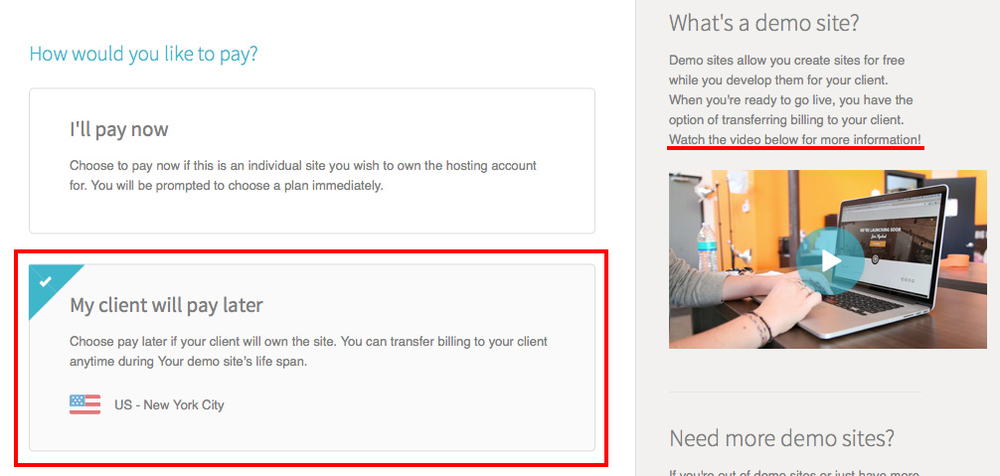

Intro to CMS & WordPress
Blogs, Websites and CMS
How are blogs different from websites?
- the term blog is an abbreviation for weblog
- blogs often contain an ongoing collection of posts and articles presented in chronological order
- often (but not always) written in a diary-style of commentary
- a website can also contain a blog and standard informational pages
A Content Management System (CMS), is an application used to edit content and manage a website using a graphical user interface instead of editing the code or database.
A CMS usually includes features such as:
- database management
- themes and templates for page layouts
- making content searchable and indexable
- and much more!
What is WordPress?
- one of many types of blogging software and CMS
- an online, open source (a.k.a. free) website creation tool
- can edit, publish content and manage the website using a graphical user interface, without editing the code or database (though you can!)
- customizable core, can be extended and modified in anyway
- written primarily in PHP but also requires HTML, CSS, JavaScript
- uses PHP templates & a database to create and store content (with static HTML, you have to manually create a new document for every new page)
Depending on your needs and level of customization, you may not need to edit any of the code to get up and running.
There are two options for using WordPress, WordPress.org and WordPress.com.
WordPress.com vs WordPress.org
WordPress.com
- hosted and all technical maintenance handled by WordPress
- your domain will be “yoursite.wordpress.com” (paid upgrade for a customized domain)
- don’t need to write any PHP to get up and running
- no access to the code (without an upgrade)
- theme options are included but cannot upload your own themes
- different plans ranging from free - $299 with added features
- no plugins
WordPress.org
- must register and pay for a domain & web hosting
- you are responsible for technical maintenance
- requires web development knowledge (how much depends on level of customization desired)
- written on PHP (back-end programming language)
- also requires HTML & CSS and usually JavaScript
- full control over themes files and code
- more theme options or customize it yourself
- 1000s of plugins for adding features & functionality or create your own
Both versions basically work the same but the .com version doesn’t require any technical knowledge and is limited on the level of customization.
The .org version can be customized in any way but requires more technical knowledge. How much depends on the level of complexity of the customizations required.
Web Hosting, Servers and Domain
A server is the computer that will “host” your website files. A server is a like a computer, but they never turn off and are always connected to the internet.
Web hosts own many different servers and their job is to make sure the servers run properly, so that our websites are always available.
The domain is the internet address (e.g. www.mywebsite.com) used to website files on the server.
Developing locally refers to working on your site on your own computer.
Local WordPress Development & server
If you decide to use the WordPress.org version, you should also develop the site using a local server. It’s better to develop your site & make changes locally rather than on your live web server, so you get a chance to test it before the world sees it.
Since WordPress runs on PHP, which is a server-side language, a local server is needed to run the files before you can view the content in a web browser.
Purchasing hosting is required to make any type of website live. Some hosting companies provide hosting specifically for WordPress to handle WordPress specific things! (See resources for some articles comparing various hosts.)
Resources
- WPBeginner: How to Choose the Best WordPress Hosting?
- Performance of the Best WordPress Hosting Companies Compared
WordPress and Flywheel
Some WordPress specific hosting companies allow you to take advantage of the custom options not available on WordPress.com but manage some of the technical details like database management.
Today we’re going to look at a company called Flywheel to try out some of the features included in a hosted WordPress site without setting up a local server. (14 day free trial)
Visit getflywheel.com to create an account.
Creating a Project in Flywheel
To create a new project, login and select new site in the top navigation bar.
Fill out the required information and then choose the “My client will pay later” option to activate the 14 day free trial for creating a demo account.

To view your demo site, go to yoursite.flywheelsites.com and end the username and password provided in your account.

To access the WordPress admin panel for your site, select the WordPress Login button.

WordPress Settings
When you log into the WordPress admin area, the first thing you’ll see is the Dashboard. Here you can view your drafts, check out basic stats, respond to comments and get a general overview of your blog.
The other menus in the left sidebar allows access to additional settings such as:
- adding blog posts (Posts)
- adding pages (Pages)
- changing themes (Appearance)
- uploading media (Media)
- other general site settings
Configure basic site settings
In the admin panel, go to Settings > General.
Here, you can change/update your site title and tagline. You can also set your timezone, date/time format and language options here as well. Make sure to select Save Changes!
Go to Settings > General and update your Site Title and Tagline and another general settings.
Posts vs Pages
Posts
- used for date-based content
- posts are listed chronologically
- can also be assigned categories and tags (also referred to as taxonomies)
- permalink (URL) will include the date (can change this in the settings)
(e.g. http://your-project-name.dev/2015/09/28/my-catchy-title/)
Pages
- used for single pages of static content (e.g. about or contact page)
- cannot have taxonomies
- can have a hierarchical structure (e.g. Travel > Beach vacations)
- permalink (url) will not include the date
(e.g. http://your-project-name.dev/about/)
Content Options and Settings
When adding content into your Post or Page, the default visual editor uses a WYSIWYG editor (what you see is what you get) to format the content. Click on the Toolbar Toggle to show all of the editing options. Hover over any icon to see a short description of what each tool is used for.
When using the Visual editor, the content entered automatically gets converted into HTML.

WordPress and HTML
You can also edit or add your own HTML by selecting the Text editor tab.
In WordPress, you don’t need to add the <p> tags in either the visual or text editor. In the Visual editor, select the paragraph option from the dropdown.

In the Text editor, just ensure you return/enter twice to add a space between the paragraphs. They will automatically be converted into <p> tags via Wordpress magic!

Also, break tags <br> are also not needed. Just use the enter/return key once for a line break in either the Visual or Text WordPress editor.

Categories
Categories allow for a broad grouping of post topics. Blog posts should fit into a single category. For example, a food blog can have recipes in the following categories: Breakfast, Lunch or Dinner.
To add categories, go to Posts > Categories or within the post itself.

Sub-categories can also be created by selecting a Parent in the Categories menu.

Tags
Tags are best used to create groups of content that can apply to multiple categories and be more specific. This gives people the ability to navigate your site quickly and find exactly what they want. For example, a frittata recipe can have the following category and tags:
Category: Breakfast
Tags: eggs, kid friendly, under 30mins
Just like categories, tags can be added from the menu or when editing a post. But unlike categories, tags cannot have a hierarchy.
EXERCISE: Add Content
- Create a post and page and add some content.
- Add some categories and tags to your posts and pages.
Having content to work with will make it easier to pick a theme in the upcoming exercise.
Default Home page settings
WordPress includes many core files to make this framework run. The theme related files include php template files that are used to determine how and where to display certain types of content. These template files are also used to display just a specific portion of a page.

Based on this template hierarchy, by default, a chronological listing of your blog posts will show as your home page. To change that, you’ll need to make sure you have a Page to set as your home page and another Page for your blog.
To update these settings, follow these steps:
- If you don’t already have a page to use as your home page, create one
-
Create a blank blog page
This page does not need any content because there is already a template file used to display the blog post listing.
Creating this blog Page will create a url/permalink to point the blog page to similar to:
http://yoursite.com/blogorhttp://yoursite.flywheelsites.com/blog/if using the Flywheel demo site. -
Change the settings
Under Settings > Reading, select whichever page you want to show as the Front page (your homepage) and the blank page you created for the blog under Posts page.

Create a custom menu
Menus are a list of links, usually displayed as the navigation for your site. You can choose from Pages or Categories from within your WordPress site or a custom link (can link to an external site).
The menu location may vary depending on the theme. Some themes also offer additional menus such as social links menus.

You can also reorder the menus by dragging the menu options as well as make submenus by dragging it underneath another item.

WordPress Themes
A theme provides all of the graphical styles for your site. You can use existing themes from the WordPress theme directory, from theme developers or create your own.
Most themes include:
- overall page layouts & colour scheme
- styles for blog posts and blog archives
- typography styles
- different types of widgets and where they are located on the page
Theme Development options
There are three options for adding themes to your WordPress site.
Option 1: Free & Premium Themes
- only pay for domain, hosting & cost of theme (from free to ~ $300)
- does not require any coding (though you still have access to the codebase)
- includes some theme options that can be updated in the WordPress admin area
Option 2: Child themes
- used to modify a theme without making any changes to the parent theme’s files
- inherits the features of its parent theme including updates
- will require some knowledge of HTML, CSS and PHP
- should develop locally using a local server
Option 3: Custom themes
- built from scratch or from a starter template
- requires a deeper knowledge of HTML, CSS, PHP or get really good at following the WordPress documentation!
- should develop locally using a local server
We’ve been exploring Option 1 in this lesson but there are some extra resources and information included at the end of this lesson for further exploration.
Free & Paid Themes
Why would you code your own theme or pay for a theme if there are so many free, functional templates to choose from? Well, that all depends on how unique and customized you need your site to be.
Pre-built themes are a great way to get up and running and to try it out, and can help determine what you need before investing in development or paid themes.
If you’re not ready to code yourself just yet but want more options, paid themes often offer premium plugins, more customization options and customer support.
There are literally 1000s of free WordPress themes available for download in the WordPress directory found under Appearance > Themes, Add New. Click on the thumbnail to see a preview, get info or install a new theme.
Resources
- https://getflywheel.com/design-and-wordpress-resources/
- https://en.support.wordpress.com/video-quick-start/#find-a-theme
EXERCISE: Choose a theme
Under Appearance > Themes, let’s look the different theme options.
Watch Out!
If you change your theme, you may have to go back to your Appearance > Menus to add in the Menu Settings in again.

Bonus: Editing Theme Files
Editor menu
The Editor menu (Appearance > Editor) allows access to the theme files where you can add edits to the template files.
Be careful when editing these files.
Normally, it would be best practice to edit these files locally so any changes made won’t be “live” before it’s ready but since the Flywheel demo site is password protected, the general public won’t be able to view it.
Pro tip! Make a backup copy of the file before editing it in case you need to put it back!

Template tags
WordPress uses template tags to pull data from the database and output it onto the page. It is often mixed in with HTML so the data can be outputted into semantic HTML page layouts.
Template tags are basically PHP functions (and look similar to JavaScript functions.) Note that WordPress (and most PHP developers) use the underscore naming convention and looks something like this:
template_tag()
Here’s a couple of common template tags:
get_header() - gets the header.php file and includes it in the current theme file
the_title() - tells WordPress to get the title of the page or post from the database
How do the template tags work? This example below shows how the site tagline could be outputted on to the page, into ann h2 heading.
bloginfo('description') will get the Tagline value, from the database. The value is whatever you entered in your General Settings.
<h2 class="site-tagline"><?php bloginfo( 'description' ); ?></h2>

Local WordPress Theme Development
Developing a WordPress theme locally requires downloading the WordPress core files and setting up a local server.
WordPress Core Files
The core files can be downloaded here: https://wordpress.org/download/
Though you can access all of these files, there are some that should never be edited. The majority of your edits will be contained in the wp-content folder since those files are specific to the WordPress theme.
The one file outside of wp-content that you may need to edit is the wp-config.php file. It contains the website’s base configuration details, such as database connection information.

Setting up your local server
There are many ways to set up a local server. Here are the instructions for using the DesktopServer App:
- Download the DesktopServer app here: https://serverpress.com/get-desktopserver/
- View the video for downloading and installing the DesktopServer app: https://www.youtube.com/watch?v=d_MoCUKv3TI
- Open the DesktopServer app and follow the steps outlined in the getting started video (https://www.youtube.com/embed/Po0MkaL8Fgc) or using the written instructions here.
- Once you’ve created a local WordPress site, you can access it with the Sites button.
Another popular option is the Mamp app.
Important! You will need to run a local server anytime you’re developing WordPress locally.
Resources
- WordPress Codex
- WordPress Theme Development Handbook
- How to Edit Your WordPress Website (Without Hacking Core Files)
- Editing wp-config.php
~ end ~